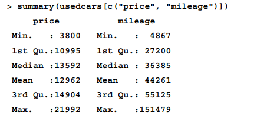
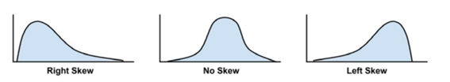
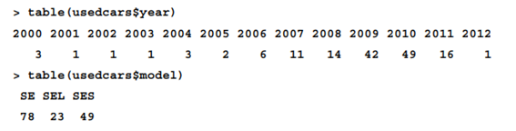
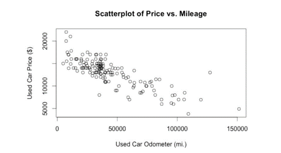

usedcars <- read.csv ("usedcars.csv", stringsAsFactors = FALSE)Unidad 1 y 2
Introducción al aprendizaje automático
La tarea de enseñar a una computadora a aprender está liga más estrechamente a un problema específico que sería una computadora que pueda jugar, reflexionar sobre filosofía o responder preguntas triviales. El aprendizaje automático es más como entrenar a un empleado que criar a un niño. Una vez teniendo un poco de noción de lo que se va a revisar en este capítulo se mostraran varios temas de interés como:
Los orígenes y las aplicaciones prácticas del aprendizaje automático.
Como las computadoras definen y representan el conocimiento.
Los conceptos básicos que diferencian los enfoques del aprendizaje automático.
Los orígenes y las aplicaciones prácticas del aprendizaje automático
El ser humano desde su nacimiento recibe datos a través de los sentidos que son procesados por el cerebro en forma de imágenes, sonidos, olores, sabores y texturas. En el pasado, la observación y registro de datos requería la intervención humana, pero actualmente, estos procesos están cada vez más automatizados y registrados en bases de datos computarizadas. Además, la invención de los sensores electrónicos ha contribuido a aumentar la cantidad y la calidad de los datos registrados. Actualmente, los gobiernos, empresas y personas registran todo tipo de información, desde datos meteorológicos hasta transacciones y comunicaciones electrónicas.
El aumento de datos ha llevado a la era del Big Data, pero esto puede ser un nombre inapropiado ya que siempre ha habido datos. Lo que hace que la era actual sea única es que los datos son más accesibles que nunca. El aprendizaje automático es el campo de estudio interesado en el desarrollo de algoritmos para transformar datos en acciones inteligentes, y la minería de datos es la generación de información novedosa a partir de grandes bases de datos. Estos dos campos se superponen en cierta medida, pero el aprendizaje automático tiende a centrarse en realizar una tarea conocida, mientras que la minería de datos se trata de la búsqueda de pepitas de información ocultas.
Usos y abusos del aprendizaje automático
En esencia, el aprendizaje automático está principalmente interesado en dar sentido a los datos complejos. Esta es una misión ampliamente aplicable y en gran medida independiente de la aplicación. Como era de esperar, el aprendizaje automático se usa ampliamente. Por ejemplo, se ha utilizado para:
- Predecir los resultados de las elecciones.
- Identificar y filtrar los mensajes de spam del correo electrónico.
- Prever la actividad delictiva
- Automatizar las señales de tráfico de acuerdo con las condiciones de la carretera
- Producir estimaciones financieras de tormentas y desastres naturales
El proceso de aprendizaje automático implica que un algoritmo identifique patrones en los datos para realizar una acción específica. En un ejemplo posiblemente apócrifo, un minorista utilizó el aprendizaje automático para identificar a mujeres embarazadas para enviarles cupones específicos, basados en patrones como la compra de vitaminas prenatales, lociones y toallitas. El minorista esperaba convertir a las futuras madres en clientes leales que compraran artículos rentables como pañales, fórmula y juguetes.
Esto hacen también los minoristas, que analizan regularmente los datos de transacciones de sus clientes para utilizar métodos de aprendizaje automático en publicidad,promociones y gestión de inventario, entre otros. También se explica que los sitios web utilizan datos de navegación para publicar anuncios y hacer recomendaciones. Aunque estos métodos pueden parecer mágicos, algunos pueden preocuparse por la forma en que se utilizan sus datos. Por lo tanto, se sugiere que aquellos que utilicen aprendizaje automático o extracción de datos consideren las implicaciones éticas del arte.
Consideraciones éticas
El aprendizaje automático es una disciplina relativamente joven y en constante evolución, lo que puede hacer que las cuestiones legales y las normas sociales asociadas sean inciertas y cambiantes. Es importante tener precaución al obtener y analizar datos para evitar infringir leyes, violar términos de servicio, abusar de la confianza o violar la privacidad de los clientes o del público. Aunque ciertas jurisdicciones pueden prohibir el uso de datos protegidos por motivos comerciales, es posible que los algoritmos de aprendizaje automático puedan inferir esta información de manera independiente, por lo que es importante tomar medidas adicionales para “des identificar” a las personas si es necesario.
Además de las consecuencias legales, el mal uso de los datos también puede tener un impacto negativo en los resultados del proyecto. Los clientes pueden sentirse incómodos o invadidos en su privacidad si se exponen aspectos de sus vidas que consideran personales. En el pasado, aplicaciones web de alto perfil han perdido muchos usuarios después de cambiar los términos de sus acuerdos de servicio y usar los datos de los usuarios para fines no acordados originalmente. La expectativa de privacidad varía según el contexto, la edad y el lugar, lo que agrega una complejidad adicional al uso adecuado de los datos personales. Por lo tanto, es importante considerar las implicaciones culturales de su trabajo antes de comenzar un proyecto de análisis de datos.
¿Cómo aprenden las máquinas?
El proceso básico de aprendizaje, ya sea en humanos o máquinas, se divide en tres componentes, y aunque la definición formal de aprendizaje automático de Tom M.Mitchell es precisa, no explica cómo las técnicas de aprendizaje automático aprenden a transformar los datos en conocimiento procesable. El uso inapropiado de los datos puede afectar los resultados y la privacidad de los clientes, y las expectativas de privacidad varían según el contexto, la cohorte de edad y el lugar, lo que agrega complejidad a la toma de decisiones sobre el uso adecuado de los datos personales. Por lo tanto, es importante considerar las implicaciones culturales antes de comenzar cualquier proyecto:
- Entrada de datos: utiliza la observación, el almacenamiento de memoria y el recuerdo para proporcionar una base fáctica para un razonamiento posterior.
- Abstracción: Implica la traducción de datos en representaciones más amplias.
- Generalización: utiliza datos abstractos para formar una base para la acción.
El proceso de aprendizaje implica más que la simple memorización, como se ilustra a través del ejemplo de estudiar para un examen. En lugar de tratar de memorizar cada posible pregunta, es mejor dedicar tiempo a comprender y abstraer las ideas clave, lo que implica una comprensión más profunda y la capacidad de aplicar ese conocimiento a temas imprevistos. Además, los tres componentes del aprendizaje (entrada de datos, abstracción y generalización) están inextricablemente vinculados, y aunque ocurren de manera subconsciente en los seres humanos, en las computadoras deben hacerse explícitos, lo que es beneficioso para su uso futuro.
Abstracción y representación del conocimiento
La representación de datos de entrada sin procesar en un formato estructurado es la tarea por excelencia para un algoritmo de aprendizaje. Antes de este punto, los datos son simplemente unos y ceros en un disco o en la memoria; no tienen significado. El trabajo de asignar un significado a los datos ocurre durante el proceso de abstracción.
La conexión entre las ideas y la realidad se ejemplifica en la famosa pintura de René Magritte La traición de las imágenes que se muestra a continuación:

El punto que Magritte estaba ilustrando es que una representación de una pipa no es realmente una pipa. A pesar del hecho de que la tubería no es real, cualquiera que vea la pintura reconoce fácilmente que la imagen es una tubería, lo que sugiere que las mentes de los observadores pueden conectar la imagen de una tubería con la idea de una tubería, que luego puede ser conectado a una tubería real que podría sostenerse en la mano. Las conexiones abstraídas como esta son la base de la representación del conocimiento, la formación de estructuras lógicas que ayudan a convertir la información sensorial sin procesar en una percepción significativa.
Durante el proceso de representación del conocimiento, la computadora resume las entradas sin procesar en un modelo, una descripción explícita de los patrones estructurados entre los datos.
Hay muchos tipos diferentes de modelos. Es posible que ya estés familiarizado con algunos.
Ejemplos incluyen:
- Ecuaciones
- Diagramas como árboles y gráficos
- Reglas lógicas if/else
- Agrupaciones de datos conocidas como clusters
La elección del modelo normalmente no se deja en manos de la máquina. En cambio, el modelo está dictado por la tarea de aprendizaje y el tipo de datos que se analizan. Más adelante en este capítulo, discutiremos los métodos para elegir el tipo de modelo con más detalle.
El proceso de ajustar un modelo a un conjunto de datos se llama entrenamiento, ya que es el maestro humano quien impone la estructura de aprendizaje automático al estudiante máquina. El entrenamiento transforma los datos en una forma abstracta que resume la información original y proporciona una teoría sobre cómo se relacionan los datos. Aunque el modelo en sí mismo no proporciona datos adicionales, da una idea de lo que no se ve y proporciona una teoría sobre cómo se relacionan los datos. Esto se ilustra con el ejemplo del descubrimiento de la gravedad por Sir Isaac Newton, quien ajustó ecuaciones a datos de observación para deducir el concepto de gravedad.
la mayoría de los modelos no producen teorías que transformen el pensamiento científico, pueden ser útiles para descubrir relaciones ocultas entre datos. Por ejemplo, un modelo entrenado con datos genómicos podría identificar combinaciones de genes responsables de ciertas enfermedades, o los bancos podrían detectar patrones de transacciones antes de actividades fraudulentas. Los psicólogos también podrían identificar nuevas combinaciones de características que indican trastornos. En resumen, los modelos permiten conceptualizar la información de una manera diferente, lo que puede revelar conexiones previamente desconocidas.
En el proceso de generalización en el aprendizaje, que es cuando el conocimiento abstracto se utiliza para tomar acciones futuras. Sin embargo, hay muchas relaciones subyacentes y modelos que pueden dificultar la generalización. Los algoritmos de aprendizaje automático utilizan heurísticas para reducir el número de modelos potenciales y encontrar los más útiles. Las personas también utilizan heurísticas, como la disponibilidad, para generalizar rápidamente la experiencia a nuevos escenarios. Por ejemplo, la disponibilidad podría explicar por qué la gente tiene más miedo a volar que a conducir, aunque los accidentes de tráfico son más comunes, pero menos publicitados. En resumen, la generalización es un proceso complejo y tanto los algoritmos de aprendizaje automático como las personas utilizan heurísticas para hacerlo de manera más eficiente.
Existe un potencial de las heurísticas para dar lugar a conclusiones ilógicas, como la falacia del jugador que puede resultar de la aplicación errónea de la heurística de representatividad. También se menciona que los algoritmos de aprendizaje automático pueden estar sesgados si sus heurísticas no son precisas, como en el caso de un algoritmo que aprendió a identificar caras basándose en un modelo específico y tiene problemas con rostros que no se ajustan a ese modelo. En resumen, tanto los seres humanos como los algoritmos pueden caer en la locura de las heurísticas mal aplicadas y tener conclusiones erróneas si sus heurísticas no son precisas.
De hecho, algunos estudios recientes en el campo de la psicología han sugerido que las personas que nacen con daños en las partes del cerebro responsables de las emociones son ineficaces en la toma de decisiones y pueden pasar horas debatiendo decisiones simples como qué color de camisa ponerse o dónde almorzar. Paradójicamente, el sesgo es lo que nos ciega de cierta información y al mismo tiempo nos permite utilizar otra información para la acción.
Evaluar el éxito del aprendizaje
El sesgo en el aprendizaje automático es necesario para el proceso de generalización. Cada modelo tiene sus debilidades y está sesgado de una manera particular. El paso final en el proceso de generalización es determinar el éxito del modelo a pesar de sus sesgos. Después de que un modelo es entrenado en un conjunto de datos, se prueba en un nuevo conjunto de datos para ver en qué medida su caracterización de los datos de entrenamiento se generaliza a los nuevos datos. Es raro que un modelo generalice perfectamente todos los casos imprevistos.
En parte, el hecho de que los modelos no generalicen perfectamente se debe al problema del ruido o variaciones inexplicables en los datos. Los datos ruidosos son causados por eventos aparentemente aleatorios, como:
- Error de medición debido a sensores imprecisos que a veces suman o restan un poco de la lectura.
- Problemas con los datos de informes, como que los encuestados informen respuestas aleatorias a las preguntas de la encuesta para terminar más rápido.
- Errores causados cuando los datos se registran incorrectamente, incluidos faltantes, nulos, valores truncados, codificados incorrectamente o corruptos.
El intento de modelar el ruido en los datos puede llevar al sobreajuste, donde el modelo se ajusta demasiado al conjunto de datos de entrenamiento y no se generaliza bien a nuevos datos. Tratar de explicar el ruido conduce a conclusiones erróneas y modelos más complejos, lo que puede dificultar la identificación del patrón real. Las soluciones al problema del sobreajuste son específicas para enfoques particulares de aprendizaje automático, pero es importante ser consciente del problema y la capacidad de los modelos para manejar datos ruidosos.
Pasos para aplicar el aprendizaje automático a sus datos
Cualquier tarea de aprendizaje automático se puede dividir en una serie de pasos más manejables. Este libro ha sido organizado de acuerdo con el siguiente proceso:
Recopilación de datos: ya sea que los datos estén escritos en papel, registrados en archivos de texto y hojas de cálculo, o almacenados en una base de datos SQL, deberá recopilarlos en un formato electrónico adecuado para el análisis. Estos datos servirán como material de aprendizaje que utiliza un algoritmo para generar conocimiento procesable
Explorar y preparar los datos: la calidad de cualquier aprendizaje automático 5. Mejora del rendimiento del modelo: si se necesita un mejor rendimiento, se hace necesario utilizar estrategias más avanzadas para aumentar el rendimiento del modelo. A veces, puede ser necesario cambiar a un tipo de modelo completamente diferente. Es posible que deba complementar sus datos con datos adicionales o realizar un trabajo preparatorio adicional como en el paso dos de este proceso. proyecto se basa en gran medida en la calidad de los datos que utiliza. Este paso en el proceso de aprendizaje automático tiende a requerir una gran cantidad de intervención humana. Una estadística citada a menudo sugiere que el 80 por ciento del esfuerzo en el aprendizaje automático se dedica a los datos. Gran parte de este tiempo se dedica a aprender más sobre los datos y sus matices durante una práctica llamada exploración de datos.
Entrenamiento de un modelo sobre los datos: Para cuando los datos hayan sido preparados para análisis, es probable que tenga una idea de lo que espera aprender de los datos. La tarea específica de aprendizaje automático informará la selección de un algoritmo apropiado, y el algoritmo representará los datos en forma de modelo.
Evaluación del rendimiento del modelo: debido a que cada modelo de aprendizaje automático da como resultado una solución sesgada del problema de aprendizaje, es importante evaluar qué tan bien aprendió el algoritmo a partir de su experiencia. Según el tipo de modelo utilizado, es posible que pueda evaluar la precisión del modelo mediante un conjunto de datos de prueba o que necesite desarrollar medidas de rendimiento específicas para la aplicación prevista.
Mejora del rendimiento del modelo: si se necesita un mejor rendimiento, se hace necesario utilizar estrategias más avanzadas para aumentar el rendimiento del modelo. A veces, puede ser necesario cambiar a un tipo de modelo completamente diferente. Es posible que deba complementar sus datos con datos adicionales o realizar un trabajo preparatorio adicional como en el paso dos de este proceso.
Después de completar estos pasos, si el modelo parece estar funcionando satisfactoriamente, se puede implementar para la tarea prevista. Según sea el caso, puede utilizar su modelo para proporcionar datos de puntuación para predicciones (posiblemente en tiempo real), para proyecciones de datos financieros, para generar información útil para marketing o investigación.
Elegir un algoritmo de aprendizaje automático
El proceso de elegir un algoritmo de aprendizaje automático implica hacer coincidir las características de los datos que se van a aprender con los sesgos de los enfoques disponibles. Dado que la elección de un algoritmo de aprendizaje automático depende en gran medida del tipo de datos que está analizando y de la tarea propuesta en cuestión, a menudo es útil pensar en este proceso mientras recopila, explora y limpia sus datos.
Pensando en los datos de entrada
Los algoritmos de aprendizaje automático necesitan datos de entrenamiento de entrada, que consisten en ejemplos y características. Los ejemplos son instancias del concepto que se va a aprender y pueden ser transacciones, biopsias de pacientes, etc. La unidad de observación describe las unidades en las que se miden los ejemplos, como personas o regiones geográficas. Las características son atributos útiles para aprender el concepto deseado y pueden incluir palabras en mensajes de correo electrónico o datos genómicos de células de biopsia.
La siguiente hoja de cálculo muestra un conjunto de datos en formato de matriz, lo que significa que cada ejemplo tiene la misma cantidad de características. En los datos de matriz, cada fila de la hoja de cálculo es un ejemplo y cada columna es una característica. Aquí, las filas indican ejemplos de automóviles, mientras que las columnas registran varias características de los automóviles, como el precio, el kilometraje, el color y la transmisión. Los datos en formato de matriz son, con mucho, la forma más común utilizada en el aprendizaje automático, aunque, como verá en capítulos posteriores, otras formas se utilizan ocasionalmente en casos especializados.
Las características vienen en varias formas también. Si una característica representa una característica medida en números, como era de esperar, se llama numérica. Alternativamente, si mide un atributo que está representado por un conjunto de categorías, la característica se denomina categórica o nominal. Un caso especial de variables categóricas se llama ordinal, que designa una variable nominal con categorías que caen en una lista ordenada.
Algunos ejemplos de variables ordinales incluyen tallas de ropa como pequeña, mediana y grande, o una medida de la satisfacción del cliente en una escala del 1 al 5. Es importante considerar que representan las características porque el tipo y la cantidad de características en su conjunto de datos ayudará a determinar un algoritmo de aprendizaje automático apropiado para su tarea.
Exige dos tipos de modelos utilizados en el análisis de datos: los modelos predictivos y los modelos descriptivos. Los modelos predictivos se utilizan para predecir valores numéricos mediante el ajuste de modelos de regresión lineal, que son ampliamente utilizados en la realización de pronósticos. Por otro lado, los modelos descriptivos se utilizan para descubrir patrones en los datos mediante el aprendizaje no supervisado. El descubrimiento de patrones es un ejemplo de modelado descriptivo y se utiliza para identificar asociaciones frecuentes dentro de los datos, como en el análisis de la cesta de la compra en datos de compras transaccionales.
La tarea de modelado descriptivo de dividir un conjunto de datos en grupos homogéneos, también conocida como agrupación, y una tabla que enumera los tipos generales de algoritmos de aprendizaje automático tratados en el libro. La agrupación se utiliza a menudo para el análisis de segmentación que identifica grupos de personas con información similar para adaptar campañas publicitarias a audiencias particulares. La tabla enumera varios tipos de algoritmos, incluyendo árboles de regresión, agrupación de k-medias, máquinas de vectores de soporte, redes neuronales, árboles de decisión, reglas de asociación, y algoritmos de aprendizaje supervisado y no supervisado.
Hacer coincidir sus datos con un algoritmo apropiado
La siguiente tabla enumera los tipos generales de algoritmos de aprendizaje automático que se tratan en este libro, cada uno de los cuales puede implementarse de varias maneras. Aunque esto cubre solo una parte del conjunto completo de todos los algoritmos de aprendizaje automático, el aprendizaje de estos métodos proporcionará una base suficiente para dar sentido a otros métodos a medida que los encuentre.
Para hacer coincidir una tarea de aprendizaje con un enfoque de aprendizaje automático, es necesario comenzar por identificar el tipo de tarea, que puede ser clasificación, predicción numérica, detección de patrones o agrupación. La elección del algoritmo dependerá de la tarea y de las fortalezas y debilidades de cada enfoque, que se enumerarán en cada capítulo. En el caso de la clasificación, es importante considerar la interpretación del modelo, ya que algunos algoritmos, como los árboles de decisión, producen modelos más fáciles de entender que otros, como las redes neuronales. El uso de R para el aprendizaje automático requiere la instalación de paquetes gratuitos que contienen los algoritmos necesarios para cada tarea.
Gestión y Comprender los datos
Exploración y comprensión de datos
El proceso de aprendizaje automático comienza con la recopilación y carga de datos en estructuras de datos R. El siguiente paso es examinar detalladamente los datos para comprender sus características únicas. Comprender los datos es crucial para encontrar el mejor modelo de aprendizaje automático que se ajuste al problema. Un ejemplo de cómo explorar datos es mediante el conjunto de datos usedcars.csv, que contiene información sobre autos usados para la venta en EE. UU.
Al analizar el conjunto de datos usedcars, asumimos el papel de un científico de datos que busca comprender los datos de los autos usados. La exploración de datos es un proceso de investigación en el que se responden preguntas sobre los datos, y aunque las preguntas pueden variar según el proyecto, los tipos de preguntas son similares. Los pasos básicos para investigar cualquier conjunto de datos se pueden adaptar a cualquier tamaño de conjunto de datos.
Explorando la estructura de los datos
Una de las primeras preguntas que debe hacer en su investigación debe ser sobre cómo se organizan los datos. Si tiene suerte, su fuente le proporcionará un diccionario de datos, un documento que describe las características de los datos. En nuestro caso, los datos del coche usado no vienen con esta documentación, por lo que tendremos que crear la nuestra.
La función str() proporciona un método para mostrar la estructura de un marco de datos o cualquier estructura de datos R, incluidos vectores y listas. Se puede utilizar para crear el esquema básico de nuestro diccionario de datos:
Para un comando tan simple, aprendemos una gran cantidad de información sobre el conjunto de datos.
En el conjunto de datos de usedcars, el número de observaciones se abrevia como “n” y se asume que hay 150 ejemplos de automóviles usados a la venta. Las seis variables registradas en los datos se refieren a las seis características del automóvil. Además, se menciona la característica “color” y se sugiere que hay detalles adicionales sobre ella que se pueden explorar.
En el conjunto de datos de usedcars, se indica el tipo de cada variable después del nombre de la variable, y se observa que tres variables son de tipo carácter (chr) y tres son de tipo entero (int). Aunque este conjunto de datos solo incluye variables de caracteres y enteros, es posible que en otros conjuntos de datos se encuentren variables numéricas (num) o factores (tipo factor). R presenta una secuencia de los primeros valores de cada característica después de la indicación de su tipo, y se menciona que los primeros cuatro valores de la característica “color” son “Amarillo”, “Gris”, “Plata” y “Gris”.
Explorando variables numéricas
Para investigar las variables numéricas en los datos de automóviles usados, emplearemos un conjunto de medidas de uso común para describir valores conocidos como estadísticas de resumen. La función summary() muestra varias estadísticas de resumen comunes.
Echemos un vistazo a una sola característica, año:
El encabezado de la salida de la función summary() puede dar una idea de las estadísticas de resumen de los datos. En el caso de los datos de automóviles, los números como 2000, 2008 y 2009 que aparecen en el encabezado pueden hacer suponer que la variable “año” indica el año de fabricación de los vehículos, en lugar del año de publicación del anuncio, ya que los vehículos se pusieron a la venta recientemente.
También podemos usar la función summary() para obtener estadísticas de resumen para varias variables numéricas al mismo tiempo:

Las seis estadísticas de resumen que proporciona la función summary() son herramientas simples pero poderosas para investigar datos. Las estadísticas de resumen se pueden dividir en dos tipos: medidas de centro y medidas de dispersión.
Las medidas de tendencia central, que se utilizan en estadísticas para identificar un valor medio en un conjunto de datos. La medida común del centro es el promedio, que se usa para encontrar el valor medio de un conjunto de números. El texto utiliza ejemplos cotidianos para ilustrar el concepto de promedio, como un estudiante promedio, un peso medio y un artículo promedio.
El promedio se considera típico y no muy diferente de los demás en el grupo, y se utiliza como un ejemplo para comparar otros valores.
En estadística, el promedio también se conoce como la media, una medida definida como la suma de todos los valores dividida por el número de valores. Por ejemplo, para calcular el ingreso medio en un grupo de tres personas con ingresos de 35 000 dólares, 45 000 dólares y 55 000 dólares, podríamos escribir:
La mediana también puede proporcionar información valiosa sobre el conjunto de datos. En este caso, podríamos calcular la mediana del precio y el kilometraje para tener una idea de cuál es el valor central del conjunto de datos.
Es importante recordar que tanto la media como la mediana son solo dos de muchas medidas de tendencia central disponibles y que cada una tiene sus propias ventajas y limitaciones. Es importante seleccionar la medida de tendencia central adecuada según el conjunto de datos y la pregunta que se esté tratando de responder.
El resumen de cinco números es un conjunto de cinco estadísticas que representan aproximadamente la dispersión de un conjunto de datos. Las cinco estadísticas se incluyen en la salida de la función summary() . Escritos en orden, son:
Como era de esperar, el mínimo y el máximo son los valores más extremos que se encuentran en el conjunto de datos, lo que indica los valores más pequeños y más grandes respectivamente. R proporciona las funciones min() y max() para calcular estos valores en un vector de datos.
El lapso entre el valor mínimo y máximo se conoce como rango. En R, la función range() devuelve tanto el valor mínimo como el máximo. Al combinar range() con la función de diferencia, diff() te permite examinar el rango de datos con un solo comando:

Los cuartiles primero y tercero, Q1 y Q3, se refieren al valor por debajo o por encima del cual se encuentra una cuarta parte de los valores. Junto con la mediana (Q2), los cuartiles dividen un conjunto de datos en cuatro partes, cada una con el mismo número de valores.
Visualización de variables numéricas:
Un histograma es otra forma de representar gráficamente la dispersión de una variable numérica.
Podemos crear un histograma para el precio de un auto usado y los datos de kilometraje usando la función hist() . Como habíamos hecho con el diagrama de caja, especificaremos un título para la figura usando el parámetro principal y etiquetaremos el eje x con el parámetro xlab . Los comandos para crear los histogramas son:
Histograma se compone de una serie de barras con alturas que indican el recuento o la frecuencia de los valores que se encuentran dentro de cada uno de los contenedores de igual tamaño que dividen los valores. Las líneas verticales que separan las barras, tal como están etiquetadas en el eje horizontal, indican los puntos inicial y final del rango de valores del contenedor.
También puede notar que la forma de los dos histogramas es algo diferente. Parece que los precios de los autos usados tienden a dividirse equitativamente a ambos lados del medio, mientras que el kilometraje de los autos se extiende más hacia la derecha. Esta característica se conoce como sesgo, específicamente sesgo a la derecha, porque los valores en el extremo superior (lado derecho) están mucho más dispersos que los valores en el extremo inferior (lado izquierdo). Como se muestra en el siguiente diagrama, los histogramas de datos sesgados se ven estirados en uno de los lados:

Si todos los valores tienen la misma probabilidad de ocurrir, digamos, por ejemplo, en un conjunto de datos que registra los valores lanzados en un dado justo de seis caras, se dice que la distribución es uniforme. Una distribución uniforme es fácil de detectar con un histograma porque las barras tienen aproximadamente la misma altura. Cuando se visualiza con un histograma, puede parecerse al siguiente diagrama:
Para calcular la desviación estándar, primero debemos obtener la varianza, que se define como el promedio de las diferencias al cuadrado entre cada valor y el valor medio. En notación matemática, la varianza de un conjunto de n valores de x se define mediante la siguiente fórmula. La letra griega mu (similar en apariencia a una m) denota la media de los valores, y la varianza misma se denota con la letra griega sigma al cuadrado (similar a ab girada hacia los lados):
La desviación estándar es la raíz cuadrada de la varianza y se denota por sigma como se muestra en la siguiente fórmula:
Para obtener la varianza y la desviación estándar en R se pueden utilizar las funciones var() y sd() . Por ejemplo, al calcular la varianza y la desviación estándar de nuestras variables de precio y millaje, encontramos:
Explorando variables categóricas
El conjunto de datos de autos usados tenía tres variables categóricas: modelo, color y transmisión. Debido a que usamos el parámetro stringsAsFactors = FALSE al cargar los datos, R los ha dejado como variables de caracteres (chr) en lugar de convertirlos automáticamente en factores. Además, podríamos considerar tratar el año como categórico; aunque es como un valor numérico (int), el valor de cada año es una categoría que podría aplicarse a varios autos.
A diferencia de los datos numéricos, los datos categóricos se examinan mediante tablas en lugar de estadísticas de resumen. Una tabla que presenta una única variable categórica se conoce como tabla unidireccional. La función table() se puede usar para generar tablas unidireccionales para nuestros datos de autos usados:

Medición de la tendencia central: la moda En términos estadísticos, la moda de una característica es el valor que se presenta con más frecuencia. Al igual que la media y la mediana, la moda es otra medida de tendencia central. A menudo se usa para datos categóricos, ya que la media y la mediana no están definidas para variables nominales.
Explorando relaciones entre variables
¿Los datos de precios implican que estamos examinando solo automóviles de clase económica o también hay automóviles de lujo con un alto kilometraje?
¿Las relaciones entre el modelo y los datos de color brindan información sobre los tipos de automóviles que estamos examinando?
Este tipo de preguntas se pueden abordar observando las relaciones bivariados, que consideran la relación entre dos variables. Las relaciones de más de dos variables se denominan relaciones multivariadas Empecemos con el caso bivariado.
Visualización de relaciones: diagramas de dispersión Un diagrama de dispersión es un diagrama que visualiza una relación bivariado. Es una figura bidimensional en la que se dibujan puntos en un plano de coordenadas utilizando los valores de una característica para proporcionar las coordenadas x horizontales y los valores de otra característica para proporcionar las coordenadas verticales y. Los patrones en la ubicación de los puntos revelan asociaciones subyacentes entre las dos características.
Para responder a nuestra pregunta sobre la relación entre el precio y el kilometraje, examinaremos un diagrama de dispersión. Usaremos la función plot() , junto con los parámetros main, xlab e ylab usados en gráficos anteriores para etiquetar el diagrama.

Usando el diagrama de dispersión, notamos una clara relación entre el precio de un auto usado y la lectura del odómetro. Para leer el gráfico, se examina cómo cambian los valores de la variable del eje y a medida que aumentan los valores del eje x. En este caso, los valores del precio tienden a ser más bajos a medida que aumentan los valores del kilometraje, lo que implica que los precios anunciados son más bajos para los automóviles con mayor kilometraje. Si alguna vez vendió o compró un automóvil usado, esta no es una idea profunda.
Examen de relaciones: tabulaciones cruzadas de dos vías Para examinar una relación entre dos variables nominales, se utiliza una tabulación cruzada de dos vías (también conocida como tabulación cruzada o tabla de contingencia). Una tabulación cruzada es similar a un diagrama de dispersión en el sentido de que le permite examinar cómo los valores de una variable varían según los valores de otra. El formato es una tabla en la que las filas son los niveles de una variable mientras que las columnas son los niveles de otra. Los conteos en cada una de las celdas de la tabla indican el número de valores que caen en la combinación particular de fila y columna. Examen de relaciones: tabulaciones cruzadas de dos vías Para examinar una relación entre dos variables nominales, se utiliza una tabulación cruzada de dos vías (también conocida como tabulación cruzada o tabla de contingencia ). Una tabulación cruzada es similar a un diagrama de dispersión en el sentido de que le permite examinar cómo los valores de una variable varían según los valores de otra. El formato es una tabla en la que las filas son los niveles de una variable mientras que las columnas son los niveles de otra. Los conteos en cada una de las celdas de la tabla indican el número de valores que caen en la combinación particular de fila y columna.
Ejemplo
str (usedcars)'data.frame': 150 obs. of 6 variables:
$ year : int 2011 2011 2011 2011 2012 2010 2011 2010 2011 2010 ...
$ model : chr "SEL" "SEL" "SEL" "SEL" ...
$ price : int 21992 20995 19995 17809 17500 17495 17000 16995 16995 16995 ...
$ mileage : int 7413 10926 7351 11613 8367 25125 27393 21026 32655 36116 ...
$ color : chr "Yellow" "Gray" "Silver" "Gray" ...
$ transmission: chr "AUTO" "AUTO" "AUTO" "AUTO" ...summary(usedcars$year) Min. 1st Qu. Median Mean 3rd Qu. Max.
2000 2008 2009 2009 2010 2012 summary(usedcars[c("price", "mileage")]) price mileage
Min. : 3800 Min. : 4867
1st Qu.:10995 1st Qu.: 27200
Median :13592 Median : 36385
Mean :12962 Mean : 44261
3rd Qu.:14904 3rd Qu.: 55125
Max. :21992 Max. :151479 (36000+44000+56000)/3[1] 45333.33mean(c(36000,44000,56000))[1] 45333.33median(c(36000,44000,56000))[1] 44000range(usedcars$price)[1] 3800 21992diff(range(usedcars$price))[1] 18192IQR(usedcars$price)[1] 3909.5quantile(usedcars$price) 0% 25% 50% 75% 100%
3800.0 10995.0 13591.5 14904.5 21992.0 quantile(usedcars$price, probs = c(0.01, 0.99)) 1% 99%
5428.69 20505.00 quantile(usedcars$price, seq(from = 0, to = 1, by = 0.20)) 0% 20% 40% 60% 80% 100%
3800.0 10759.4 12993.8 13992.0 14999.0 21992.0 boxplot(usedcars$price, main = "Boxplot of Used Car Prices", ylab = "Price($)")boxplot(usedcars$mileage, main = "Boxplot of Used Car Mileage", ylab = "Odometer (mi.)")hist(usedcars$price, main = "Histogram of Used Car Prices", xlab = "Price ($)")hist(usedcars$mileage, main = "Histrogram of Used Car Mileage", xlab = "Odometer (mi.)")var(usedcars$price)[1] 9749892sd(usedcars$price)[1] 3122.482var(usedcars$mileage)[1] 728033954sd(usedcars$mileage)[1] 26982.1table(usedcars$year)
2000 2001 2002 2003 2004 2005 2006 2007 2008 2009 2010 2011 2012
3 1 1 1 3 2 6 11 14 42 49 16 1 table(usedcars$model)
SE SEL SES
78 23 49 table(usedcars$color)
Black Blue Gold Gray Green Red Silver White Yellow
35 17 1 16 5 25 32 16 3 model_table <- table(usedcars$model)prop.table(model_table)
SE SEL SES
0.5200000 0.1533333 0.3266667 color_table <- table(usedcars$color)
color_pct <- prop.table(color_table)*100
round(color_pct, digits = 1)
Black Blue Gold Gray Green Red Silver White Yellow
23.3 11.3 0.7 10.7 3.3 16.7 21.3 10.7 2.0 plot(x= usedcars$mileage, y=usedcars$price,
main = "Scatterplot of Price vs. Mileage",
xlab = "Used Car Odometer (mi.)",
ylab = "Used Car Price ($)")
install.packages(“gmodels”)
library(gmodels)usedcars$conservative <- usedcars$color %in% c("Black","Gray","Silver","White")table(usedcars$conservative)
FALSE TRUE
51 99 CrossTable(x=usedcars$model, y=usedcars$conservative)
Cell Contents
|-------------------------|
| N |
| Chi-square contribution |
| N / Row Total |
| N / Col Total |
| N / Table Total |
|-------------------------|
Total Observations in Table: 150
| usedcars$conservative
usedcars$model | FALSE | TRUE | Row Total |
---------------|-----------|-----------|-----------|
SE | 27 | 51 | 78 |
| 0.009 | 0.004 | |
| 0.346 | 0.654 | 0.520 |
| 0.529 | 0.515 | |
| 0.180 | 0.340 | |
---------------|-----------|-----------|-----------|
SEL | 7 | 16 | 23 |
| 0.086 | 0.044 | |
| 0.304 | 0.696 | 0.153 |
| 0.137 | 0.162 | |
| 0.047 | 0.107 | |
---------------|-----------|-----------|-----------|
SES | 17 | 32 | 49 |
| 0.007 | 0.004 | |
| 0.347 | 0.653 | 0.327 |
| 0.333 | 0.323 | |
| 0.113 | 0.213 | |
---------------|-----------|-----------|-----------|
Column Total | 51 | 99 | 150 |
| 0.340 | 0.660 | |
---------------|-----------|-----------|-----------|